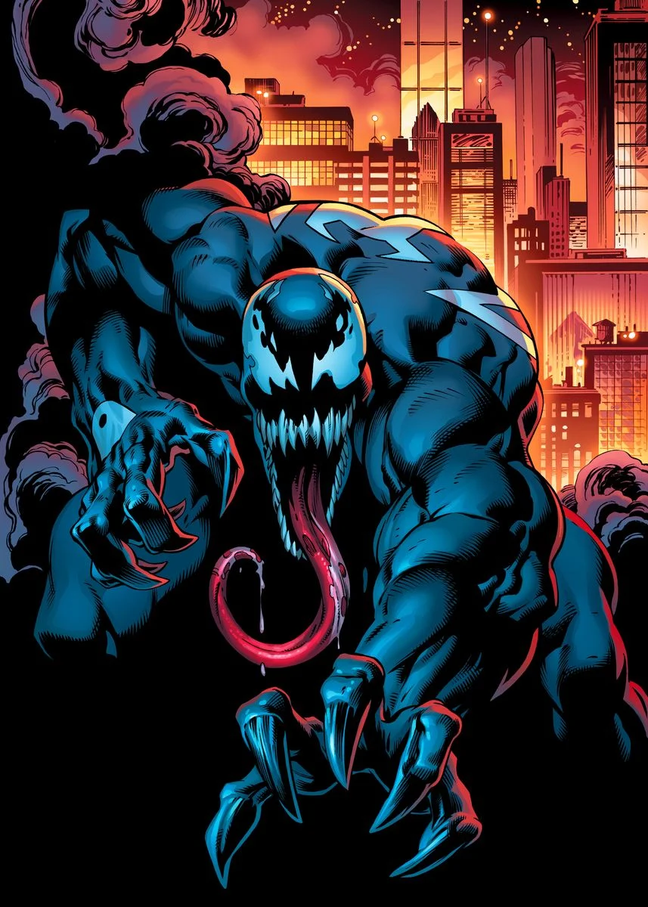

Edward Charles Allan Brock
Bibliografia
Adultez
Despues de que Venom se uniera en mi cuerpo, mente y mi vida entera nada volvio aser igual, las peleas contra spiderman en busqueda de vengasa y de odio se volvieron parte de nuestra rutina, al igual ya estamos acostumbrados a estar en la carcel ya que fuimos varias veces tras perder en contra de spiderman, mi acciones a sido variadas ya que e causado muchas puertes alguna justas y otras no y otras veces e ayudado a varias personas con algunos problemas, hasta e peleado junto a spiderman en contra del simbionte carnage cosa que no me enguryese demasiado pero e pasado por varias faces una de ellas fue un semi-heroe ya que spiderman salvo a mi ex mujer decidi ayudar un pueblo pero al paso del tiempo volvi a la villania. Mi vida a estado llena de sufrimiento y dolor pero hay algunas veces que mi vida me hace ser feliz con mi vida, pero hay algo que nunca va a cambiar u eso es que
Nosotros somos !VENOM¡
Inicio
Infacia
Adolecendia